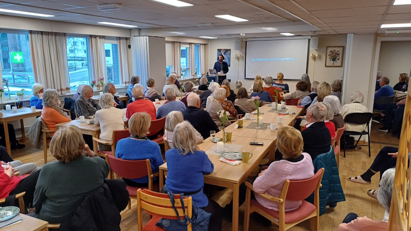
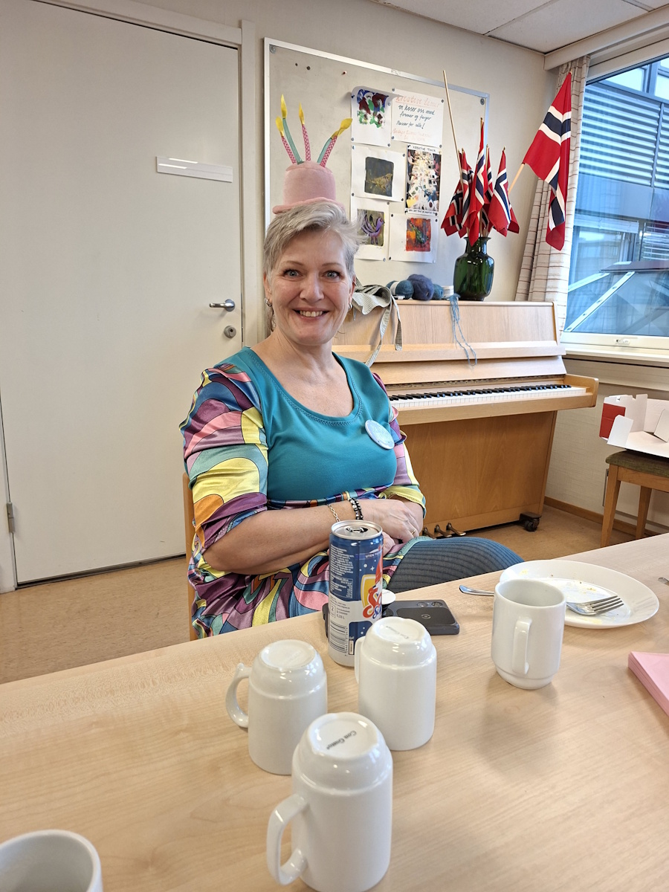
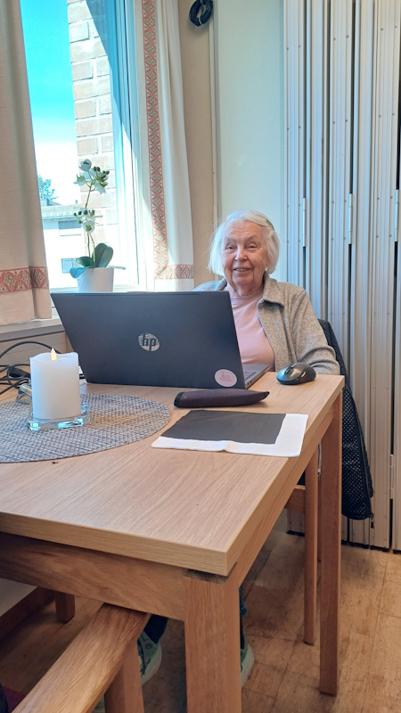

Kultur i hverdagen
Культура в повсякденному житті
Culture in everyday life
La cultura nella vita quotidiana
Når vi hører ordet kultur, går tankene ofte til kunst, konserter, bøker, museer og gamle bygninger. Og ja, alt dette er kultur. Viktig kultur.
Men kultur er også noe som skjer helt vanlig, midt i hverdagen.
Det er måten vi hilser på hverandre. Hvordan vi tar imot en som kommer inn døren for første gang. Hvordan vi setter på kaffe, trekker ut en stol og sier: «Så hyggelig at du kom.»
Derfor passer Møteplass Vinderen så godt inn i Kulturjakten i Vestre Aker.

Dette er ikke et sted du må forstå før du kommer. Du trenger ikke være medlem. Du trenger ikke melde deg på alt mulig. Du trenger ikke ha en plan, et ærend eller en god forklaring. Du kan bare komme innom.
Kanskje tar du en kopp kaffe. Kanskje møter du noen du kjenner. Kanskje slår du av en prat med noen du aldri har møtt før. Eller kanskje sitter du bare litt, ser deg rundt og kjenner at dette er et sted det går an å være.
På Møteplass Vinderen skjer det mye. Her er kafé, aktiviteter, frivillighet og små og store møter mellom mennesker. Men det viktigste står ikke nødvendigvis på programmet. Det viktigste skjer ofte rundt bordene, ved kaffekoppen, i en kort samtale i døren eller når noen spør: «Hvordan går det med deg?»
Noen kommer hit for å bidra. Noen kommer for å være med på en aktivitet. Noen kommer fordi dagen blir bedre når man har et sted å gå. Mange gjør litt av alt. Og det er kanskje nettopp derfor møteplassen betyr så mye.

For frivillighet handler ikke bare om oppgaver som skal løses. Det handler om folk. Om å gjøre nærmiljøet litt varmere, litt tryggere og litt mer menneskelig. Når noen ønsker velkommen, dekker et bord, lager kaffe, arrangerer noe hyggelig eller tar seg tid til en prat, da bygges kultur. Ikke høytidelig kultur. Ikke kultur på sokkel. Men levende kultur, slik vi merker den i hverdagen.
Vestre Aker har mye å være stolt av. Vi har natur, historie, skoler, idrettslag, foreninger, institusjoner og mange mennesker som legger ned tid og krefter for andre. Møteplass Vinderen er en del av dette. Ikke fordi stedet er gammelt eller storslått, men fordi det viser noe fint om hvem vi ønsker å være.
Et lokalsamfunn der det er plass til flere rundt bordet.
Kulturjakten handler om å oppdage nærmiljøet med nye øyne. Møteplass Vinderen minner oss om at kultur ikke bare er noe vi ser på. Det er også noe vi gjør sammen.

Så kom gjerne innom. Ta med en nabo, en venn eller noen som kanskje trenger et sted å gå. Sett deg ned. Ta en kopp kaffe. Kjenn litt på fellesskapet.
Og når du er ferdig her, fortsetter jakten. Vestre Aker har mange flere steder, historier og møteplasser å oppdage.
Коли ми чуємо слово «культура», ми часто думаємо про мистецтво, концерти, книжки, музеї та старі будівлі. І так, усе це — культура. Важлива культура.
Але культура — це й те, що відбувається зовсім буденно, посеред нашого повсякдення.
Це те, як ми вітаємось одне з одним. Як приймаємо людину, що вперше зайшла в двері. Як ставимо каву, відсуваємо стілець і кажемо: «Так приємно, що ви прийшли».
Саме тому Møteplass Vinderen так добре вписується у Полювання за культурою у Вестре-Акер.
Це не місце, яке потрібно зрозуміти, перш ніж приходити. Не потрібно бути членом. Не треба ні на що записуватись. Не потрібно мати плану, справи чи поважної причини. Можна просто зазирнути.
Можливо, ви візьмете чашку кави. Можливо, зустрінете когось знайомого. Можливо, перекинетесь словом із тим, кого ніколи раніше не бачили. А може, просто посидите трохи, роззирнетесь і відчуєте, що тут можна бути собою.
На Møteplass Vinderen відбувається багато всього. Тут є кафе, заняття, волонтерство, малі й великі зустрічі між людьми. Але найважливіше не обов’язково стоїть у програмі. Найважливіше часто відбувається за столиками, біля чашки кави, у короткій розмові біля дверей чи коли хтось запитує: «Як ваші справи?»
Хтось приходить сюди, щоб допомагати. Хтось — щоб узяти участь у занятті. Хтось — тому що день стає кращим, коли є куди піти. Багато хто робить потроху всього. І, можливо, саме тому ця зустрічна точка так багато значить.
Адже волонтерство — це не лише про завдання, які треба виконати. Це про людей. Про те, щоб зробити район трішки теплішим, безпечнішим і більш людяним. Коли хтось вітає вас, накриває на стіл, заварює каву, влаштовує щось приємне чи знаходить час на розмову — тоді й будується культура. Не врочиста культура. Не культура на п’єдесталі. А жива культура, яку ми відчуваємо щодня.
Вестре-Акер має чим пишатися. У нас є природа, історія, школи, спортивні клуби, об’єднання, установи та багато людей, які віддають свій час і сили заради інших. Møteplass Vinderen — частина цього. Не тому, що це місце старовинне чи величне, а тому, що воно показує щось хороше про те, ким ми хочемо бути.
Громада, у якій вистачає місця багатьом за одним столом.
Полювання за культурою — про те, щоб подивитися на район новими очима. Møteplass Vinderen нагадує нам, що культура — це не лише те, на що ми дивимось. Це й те, що ми робимо разом.
Тож заходьте. Візьміть із собою сусіда, друга чи когось, кому, можливо, потрібне місце, куди прийти. Сядьте. Випийте чашку кави. Відчуйте трохи спільноти.
А коли закінчите тут — полювання триває. У Вестре-Акер ще багато місць, історій і зустрічних точок, які чекають на відкриття.
When we hear the word culture, our thoughts often turn to art, concerts, books, museums and old buildings. And yes, all of this is culture. Important culture.
But culture is also something that happens quite ordinarily, right in the middle of everyday life.
It is the way we greet one another. How we welcome someone who comes through the door for the first time. How we put on the coffee, pull out a chair and say: “How lovely that you came.”
That is why Møteplass Vinderen fits so well into the Heritage Hunt in Vestre Aker.
This is not a place you need to understand before you arrive. You don't have to be a member. You don't have to sign up for all sorts of things. You don't need a plan, an errand or a good explanation. You can simply drop by.
Maybe you have a cup of coffee. Maybe you meet someone you know. Maybe you strike up a chat with someone you have never met before. Or maybe you just sit a while, look around and feel that this is a place where it's possible to be.
A lot happens at Møteplass Vinderen. There is a café, activities, volunteering, and small and large encounters between people. But the most important thing isn't necessarily on the programme. The most important thing often happens around the tables, over a cup of coffee, in a brief conversation at the door, or when someone asks: “How are you doing?”
Some come here to contribute. Some come to take part in an activity. Some come because the day is better when you have somewhere to go. Many do a bit of everything. And that is perhaps precisely why this meeting place means so much.
For volunteering isn't only about tasks to be done. It is about people. About making the local community a little warmer, a little safer and a little more human. When someone offers a welcome, sets a table, makes coffee, arranges something pleasant or takes the time for a chat, culture is built. Not solemn culture. Not culture on a pedestal. But living culture, the kind we sense in everyday life.
Vestre Aker has much to be proud of. We have nature, history, schools, sports clubs, associations, institutions and many people who give their time and energy for others. Møteplass Vinderen is a part of this. Not because the place is old or grand, but because it shows something fine about who we want to be.
A local community where there is room for more around the table.
The Heritage Hunt is about discovering your local area with new eyes. Møteplass Vinderen reminds us that culture isn't only something we look at. It is also something we do together.
So do drop by. Bring a neighbour, a friend or someone who might need a place to go. Sit down. Have a cup of coffee. Get a sense of the community.
And when you're done here, the hunt continues. Vestre Aker has many more places, stories and meeting places to discover.
Quando sentiamo la parola cultura, spesso pensiamo all'arte, ai concerti, ai libri, ai musei e agli edifici antichi. E sì, tutto questo è cultura. Cultura importante.
Ma la cultura è anche qualcosa che accade in modo del tutto normale, nel pieno della vita quotidiana.
È il modo in cui ci salutiamo. Il modo in cui accogliamo qualcuno che entra dalla porta per la prima volta. Il modo in cui prepariamo il caffè, tiriamo fuori una sedia e diciamo: "Che bello che tu sia venuto".
Per questo Møteplass Vinderen si inserisce così bene nel percorso Alla scoperta della cultura locale di Vestre Aker.
Questo non è un luogo che devi capire prima di arrivare. Non devi essere socio. Non devi iscriverti a chissà quante cose. Non hai bisogno di un piano, di una commissione o di una buona spiegazione. Puoi semplicemente passare.
Magari prendi una tazza di caffè. Magari incontri qualcuno che conosci. Magari fai due chiacchiere con una persona che non hai mai visto prima. Oppure forse ti siedi soltanto un momento, ti guardi intorno e senti che questo è un posto in cui si può stare.
A Møteplass Vinderen succedono molte cose. Ci sono un caffè, attività, volontariato e piccoli e grandi incontri tra persone. Ma la cosa più importante non è necessariamente scritta nel programma. Spesso accade intorno ai tavoli, davanti a una tazza di caffè, in una breve conversazione sulla porta o quando qualcuno chiede: "Come stai?".
Alcuni vengono qui per dare una mano. Alcuni vengono per partecipare a un'attività. Alcuni vengono perché la giornata è migliore quando si ha un posto dove andare. Molti fanno un po' di tutto. Ed è forse proprio per questo che questo luogo d'incontro significa così tanto.
Perché il volontariato non riguarda solo compiti da svolgere. Riguarda le persone. Riguarda il rendere il quartiere un po' più caldo, un po' più sicuro e un po' più umano. Quando qualcuno dà il benvenuto, apparecchia un tavolo, prepara il caffè, organizza qualcosa di piacevole o si prende il tempo per una chiacchierata, allora si costruisce cultura. Non una cultura solenne. Non una cultura su un piedistallo. Ma una cultura viva, quella che percepiamo nella vita di tutti i giorni.
Vestre Aker ha molto di cui essere orgogliosa. Abbiamo natura, storia, scuole, società sportive, associazioni, istituzioni e tante persone che dedicano tempo ed energie agli altri. Møteplass Vinderen fa parte di tutto questo. Non perché il luogo sia antico o grandioso, ma perché mostra qualcosa di bello su chi vogliamo essere.
Una comunità locale in cui c'è posto per più persone intorno al tavolo.
Questo percorso invita a scoprire il proprio quartiere con occhi nuovi. Møteplass Vinderen ci ricorda che la cultura non è solo qualcosa che guardiamo. È anche qualcosa che facciamo insieme.
Quindi passa pure. Porta con te un vicino, un amico o qualcuno che forse ha bisogno di un posto dove andare. Siediti. Prendi una tazza di caffè. Senti un po' la comunità.
E quando hai finito qui, il percorso continua. Vestre Aker ha molti altri luoghi, storie e punti d'incontro da scoprire.
Kilder
Her er du
Slik blir du med på jakten
Finn stolpene rundt om i Vestre Aker, skann QR-koden og les historien om hvert sted. Velg et kallenavn – så samler du poeng for hvert nye sted du besøker. Ingen innlogging, ingen app.
Se kart og kom i gang